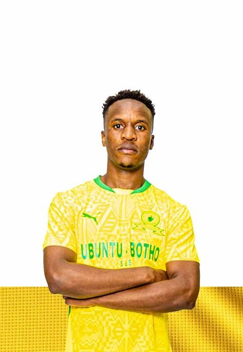
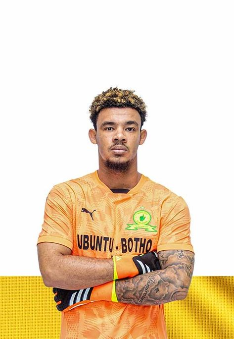
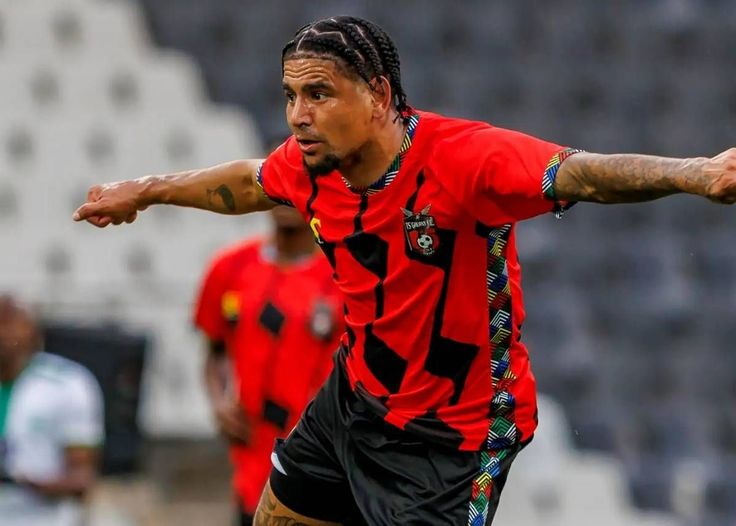
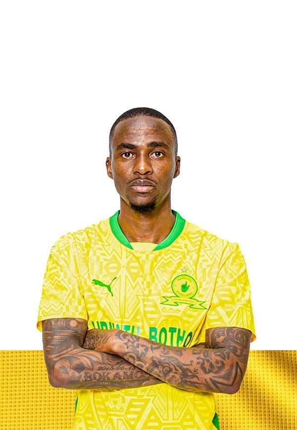
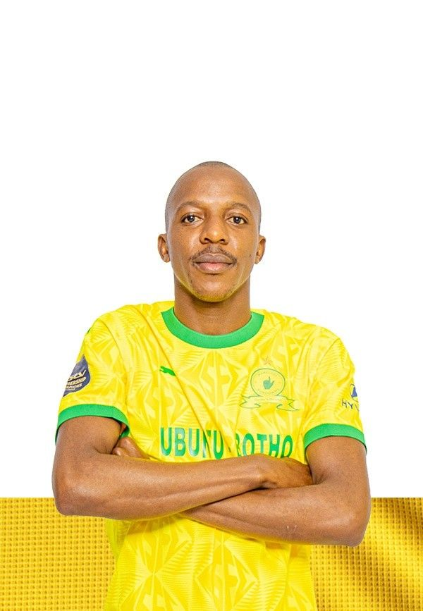
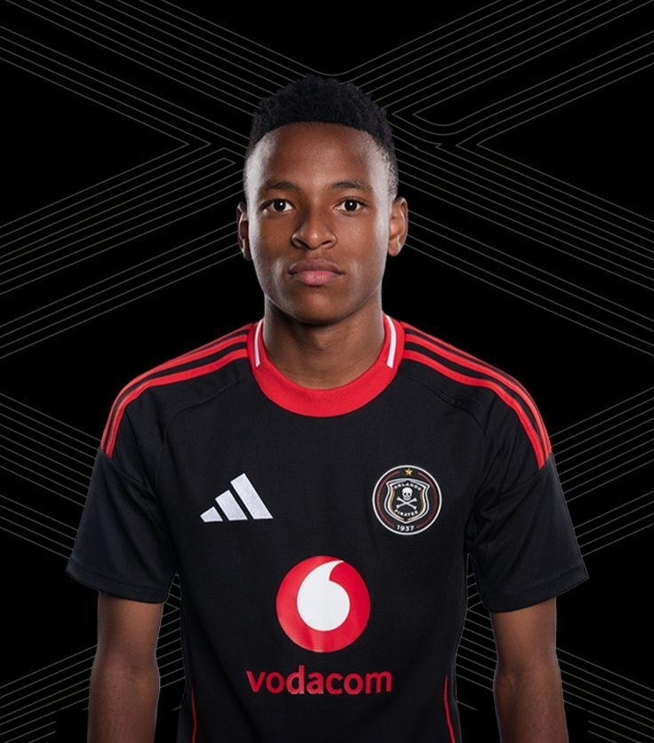

Sfiso Hlanti
Date of birth/Age: 05.01.1990 (35)
Place of birth: Durban, KZN
Height: 1.81 m | Position: Left-Back
Caps/Goals: 25 / 0

Themba Zwane
Date of birth/Age: 03.08.1989 (36)
Place of birth: Tembisa, Gauteng
Height: 1.70 m | Position: Attacking Midfield
Caps/Goals: 47 / 12

Ronwen Williams
Date of birth/Age: 21.01.1992 (33)
Place of birth: Port Elizabeth
Height: 1.84 m | Position: Goalkeeper
Caps/Goals: 46 / 0

Keagan Dolly
Date of birth/Age: 22.01.1993 (32)
Place of birth: Westbury, Gauteng
Height: 1.70 m | Position: Left Winger
Caps/Goals: 22 / 3

Percy Tau
Date of birth/Age: 13.05.1994 (31)
Place of birth: Witbank, Mpumalanga
Height: 1.75 m | Position: Right Winger
Caps/Goals: 46 / 15

Thembinkosi Lorch
Date of birth/Age: 22.07.1993 (32)
Place of birth: Bloemfontein, Free State
Height: 1.68 m | Position: Left Winger
Caps/Goals: 9 / 1

Khuliso Mudau
Date of birth/Age: 26.04.1995 (30)
Place of birth: Musina, Limpopo
Height: 1.81 m | Position: Right-Back
Caps/Goals: 16 / 1
